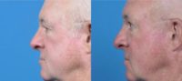

Plastic Surgery Associates Grand Rapids, Michigan
Name: Plastic Surgery Associates
Display name: Plastic Surgery Associates
Mission: Led by our nationally celebrated and respected plastic surgeons, Plastic Surgery Associates located in Grand Rapids, Michigan has been delivering life-changing results to countless delighted patients since 1987. Providing the latest in face, breast, body contouring and hand procedures in our state-of-the-art practice, as well as exceptional care and comfort. Ensuring that you only receive the absolute best in skill and satisfaction. Always.
Website: https://www.psa-gr.com/
Office hours: Mon: 8:30am – 5:00pm
Tue: 8:30am – 5:00pm
Wed: 8:30am – 5:00pm
Thu: 8:30am – 5:00pm
Fri: 8:30am – 5:00pm
Phone: (616) 208-5133
Twilio phone: (616) 208-5133
Address: 220 Lyon St. NW., Ste. 700, Grand Rapids, Michigan, USA, 49503
City: Grand Rapids
State: Michigan
Country code: US
Postal code: 49503
Phone: +16164514500
Neighborhood: Downtown
Country: USA
GPS coordinates on map: 42.9668177,-85.6736927
Treatments:
- Microdermabrasion
- Botox
- Collagen Injection
- Cheek Lift
- Neck Lift
- Juvederm
- Facelift
- Lower Facelift
- SMAS Facelift
- Rhinoplasty
- Sculptra
- Breast Lift
- Cheek Augmentation
- Tattoo Removal
- Laser Hair Removal
- Laser Resurfacing
- Fraxel Laser
- Breast Reduction
- Chemical Peel
- Glycolic Peel
- Sclerotherapy
- Salicylic Peel
- Liposuction
- Brazilian Butt Lift
- Liposculpture
- Facial Fat Transfer
- Eyelid Surgery
- Tummy Tuck
- Brow Lift
- IPL
- Facial
- Vaser Liposuction
- Permanent Makeup
- ActiveFX
- Nonsurgical Facelift
- Labiaplasty
- Chin Implant
- Gynecomastia Surgery
- Ear Surgery
- DeepFX
- Lightsheer Laser
- Breast Reconstruction
- Breast Implants
- Body Lift
- Arm Lift
- Thigh Lift
- Latisse
- Breast Implant Removal
- Lip Fillers
- Mini Tummy Tuck
- Chin Liposuction
- Nipple Surgery
- Butt Lift
- Skin Rejuvenation
- Mini Facelift
- Revision Rhinoplasty
- Scar Removal
- Vbeam
- Lip Lift
- Genioplasty
- Septoplasty
- Mommy Makeover
- Dermal Fillers
- Breast Augmentation
- Laser Liposuction
- Fractional Laser
- CO2 Laser
- Skin Lightening
- VI Peel
- Earlobe Repair
- TotalFX
- Breast Implant Revision
- Tummy Tuck Revision
- Male Tummy Tuck
- Strattice
- Vaginoplasty
- Voluma
- Breast Lift with Implants
- Inspira Breast Implants
- Vaginal Rejuvenation
- Monsplasty
- MACS Facelift
- Facelift Revision
- Liposuction Revision
- Breast Reconstruction Revision
- Breast Reconstruction with Latissimus Flap
- Natrelle Breast Implants
- Drainless Tummy Tuck
- Diastasis Recti Repair
- Hand Rejuvenation
- GalaFLEX
RealSelf Info
Profile created: Mar 21, 2017
Profile modified: Oct 30, 2023
Business type: Practice
Is national account: 0
Review count: 208
Rating: 4.9
Rating time spent: 5
Rating answered questions: 5
Rating bedside manner: 5
Rating after care: 5
Rating payment process: 5
Rating wait times: 5
Rating courtesy: 5
Rating responsiveness: 5
RealSelf’s PRO: Yes
Realself network status: candidate
Profile views: 0
Plastic Surgery Associates
Doctors
Marguerite E. Aitken, MD, FACS
Name: Marguerite E. Aitken, MD, FACS
Statement: My background is from the Arts, having worked as a medical illustrator prior to medical school. Plastic surgery was my calling and has been my passion since the start. As a woman, I feel I better understand some of the nuances of aesthetic surgery for women.
Began aesthetic medicine in: 2004
Rating: 4.9
Name: Johanna R. Krebiehl, MD
Statement: Michigan native Dr. Johanna Krebiehl, MD is a board-certified plastic surgeon at Plastic Surgery Associates in Grand Rapids, Michigan. Though she performs a wide range of procedures across the face, breast, and body, she is best known for her artistic and beautiful results performing breast enhancement surgery, mommy makeover plastic surgery, skin tightening procedures, and hand surgery.
After graduating with both her undergraduate and medical degrees from Wayne State University, Dr. Krebiehl pursued surgical training, including a plastic surgery residency and a fellowship in hand surgery at the University of Southern California. She has authored multiple textbook chapters and journal articles, as well as been a guest speaker at plastic surgery conferences around the country. In addition to maintaining a thriving surgical schedule, Dr. Krebiehl is a clinical instructor of future physicians at Michigan State University and an active member of professional organizations, including the Michigan Academy of Plastic Surgeons.
Began aesthetic medicine in: 2017
Rating: 4.9
Statement: Dr. John Renucci, MD, FACS is a compassionate and communicative board-certified plastic surgeon with two decades of experience practicing in his hometown of Grand Rapids, Michigan. Though he offers a wide range of surgical and non-invasive procedures across the face, breast, and body, he is best known at Plastic Surgery Associates for his work performing breast enhancement and various body contouring procedures, including abdominoplasty, mommy makeover surgery, and body lifts. Dr. Renucci is also passionate about laser skin resurfacing and facial fat grafting.
Dr. Renucci earned his MD from Columbia University Vagelos College of Physicians and Surgeons in New York before completing further training in plastic surgery and microsurgery at the University of Chicago. He completed his training in aesthetics with a prestigious cosmetic surgery fellowship at the Cleveland Clinic in South Florida. In addition to maintaining a thriving surgical schedule, he is an active researcher and media contributor.
Began aesthetic medicine in: 2002
Rating: 5.0
Douglas L. Vander Woude, MD
Statement: Dr. Douglas L. Vander Woude is a double board-certified plastic surgeon and a partner at Plastic Surgery Associates (PSA) and Grand Pearl Spa in Grand Rapids, Michigan. With nearly three decades in practice, Dr. Vander Woude specializes in rhinoplasty, breast enhancement, abdominoplasty, and mommy makeovers. He also has expertise in a variety of nonsurgical treatments, including Botox, Juvéderm dermal fillers, Kybella, and Sciton laser skin rejuvenation.
Dr. Vander Woude earned his medical degree from the University of Michigan Medical School in Ann Arbor and went on to complete a general surgery residency with the University of Michigan Health System, followed by a plastic surgery residency at the prestigious Brigham and Women’s Hospital (BWH) of Harvard Medical School in Boston.
He went on to receive extensive sub-specialized fellowship training in craniofacial surgery at the Cleft and Craniofacial Center at Boston Children’s Hospital before becoming an instructor in surgery at Harvard Medical School. He returned to his hometown of Grand Rapids in 1998 to join Plastic Surgery Associates.
A RealSelf Top Doctor, Dr. Vander Woude was voted one of the 10 Best Plastic Surgeons and Offices for Patient Satisfaction by the American Institute of Plastic Surgeons in 2015, 2016, and 2019. He has also been named a Top Doctor by Grand Rapids Magazine.
Board-certified by both the American Board of Plastic Surgery and the American Board of Surgery, Dr. Vander Woude is a fellow of the American College of Surgeons (FACS) and an active member of the American Society for Aesthetic Plastic Surgery (ASAPS) and the American Society of Plastic Surgeons (ASPS). He also serves as a clinical assistant professor of surgery at Michigan State College of Human Medicine, where he is actively involved in student and resident education.
Began aesthetic medicine in: 1995
Rating: 4.7
Practice’s answers
Question
Answer Header & Date
Answer Snippet
What can I do about implants that are too big for my frame?
Implants are too large
Nov 13, 2023
Sorry to hear about your implant experience. Revising a breast augmentation is something that happens. I think we all try, very hard, to make it a rare occurrence. But it does happen. Decreasing implant size is usually a straightforward procedure. Recovery is usually less than the original procedure. There can be exceptions to that, but they are also uncommon. An in person evaluation would be the only way to find out. Consider seeing a couple of surgeons (Board Certified…
Blepharoplasty or brow lift? Can I do well with just eyelid surgery?
upper lids
Aug 8, 2023
I will sometimes do both upper lids and brow together. The quickest recovery and least expensive would be to just do the upper lids. You could try botox to lift your brow as well.
Mons lift after weight loss?
Body lift or tummy tuck
Aug 8, 2023
With a tummy tuck I usually always lipo the mons. During this procedure you get a big lift in this area as well. So this combination will resolve this puffy mons area.
What type of breast lift would be most effective/ get the best results?
yes
Aug 8, 2023
A vertical breast lift will make your areolar complex smaller, matching and lifted. You will look perky and cute, small breast.
Rhinoplasty advice – what would you change on my nose?
Options for Rhinoplasty
Jun 4, 2023
Hello, and thank you for your question and pictures. It would be important for you to think about what troubles you about your nose. That is the best place to start. And, as always, it is easier to get a clear impression of your nasal shape in person. From what I can see in your pictures, shortening you nose a little to “raise” or rotate the tip up a small amount might be an option. And, possibly, a subtle reduction in size overall. These are typical goals for many rhinoplasties. …
Latest Before And After Photos
-
-
71 Year Old Man Treated With Eyelid Rejuvenation By Dr Plastic Surgery Associates
-

-
Dr. 71 Year Old Man Treated With Eye Tightening Surgery Photo
-
-
Dr 72 Year Old Man Treated With Surgery To Remove Hooded Eyelids
Last updated on 12/03/2023